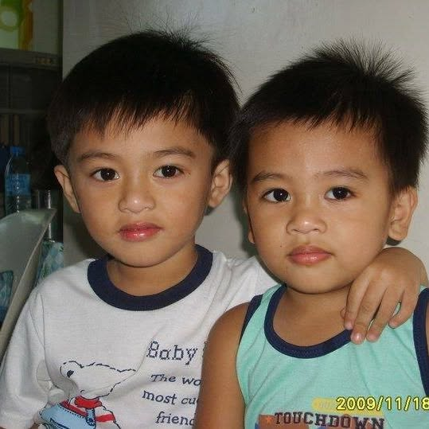
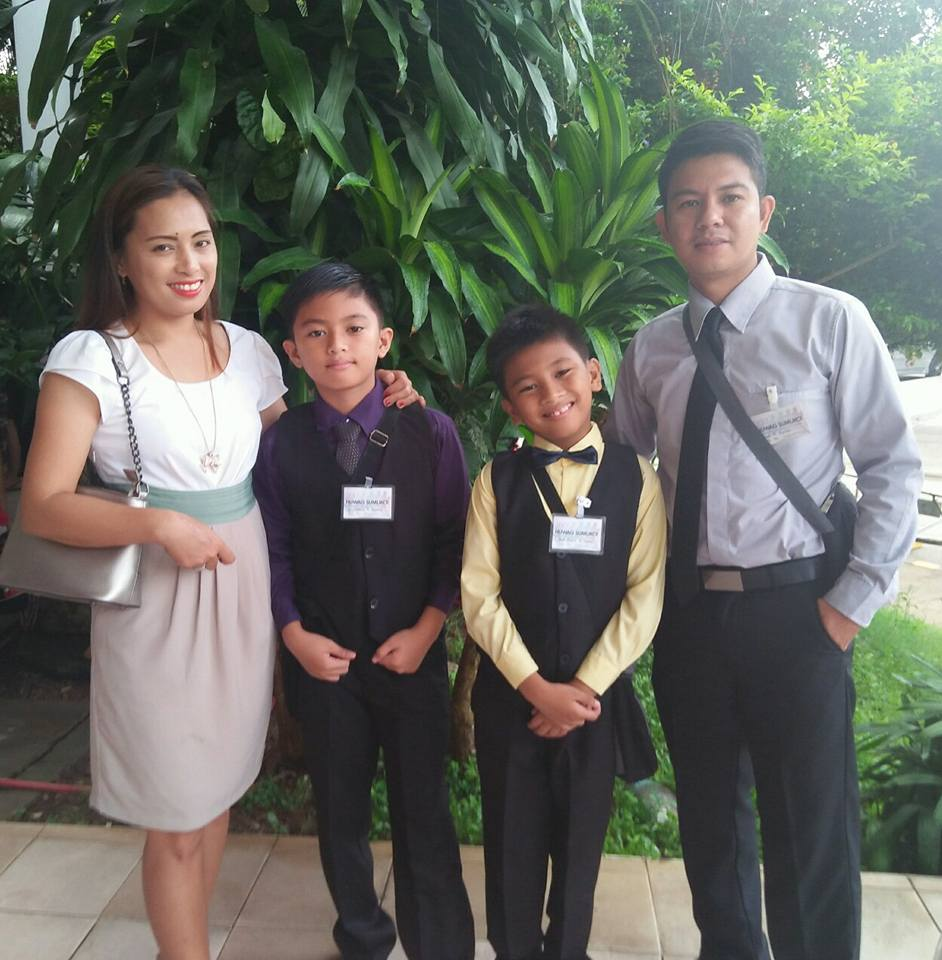
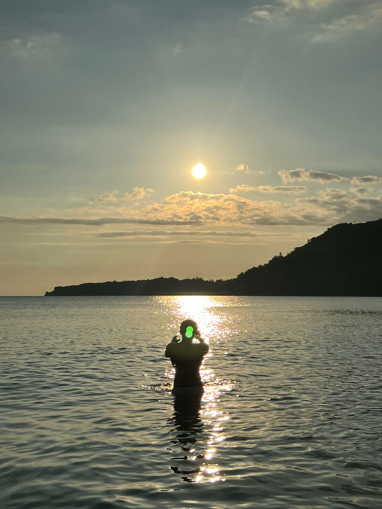
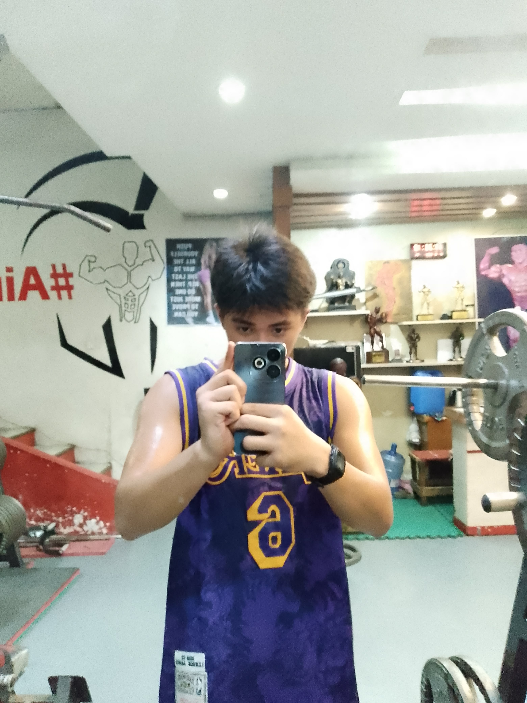
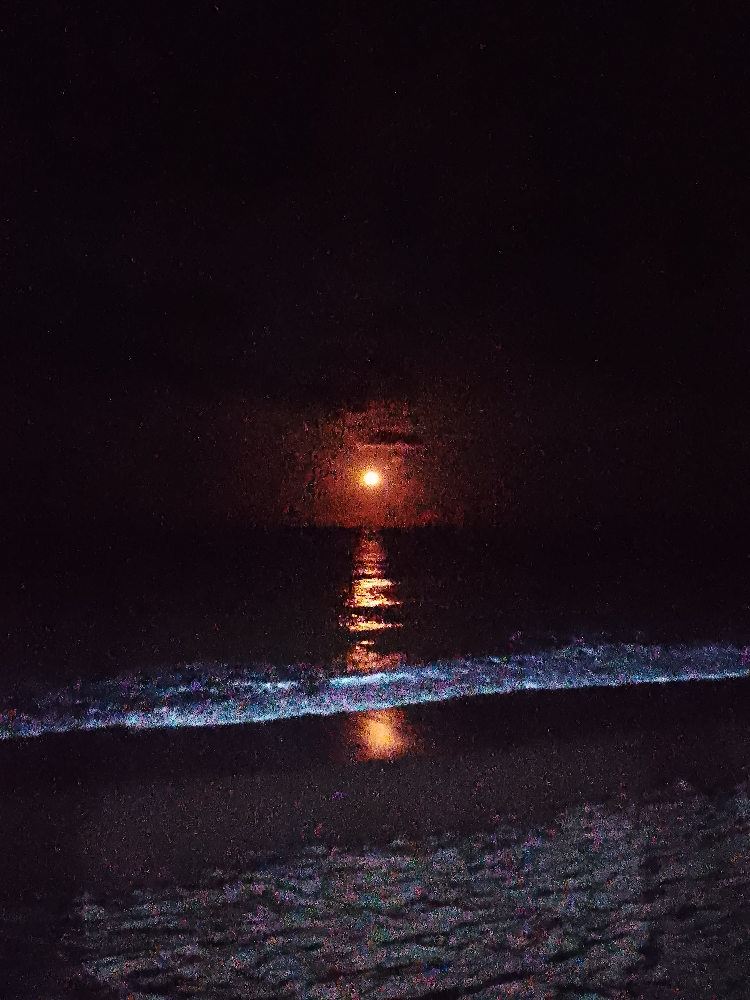
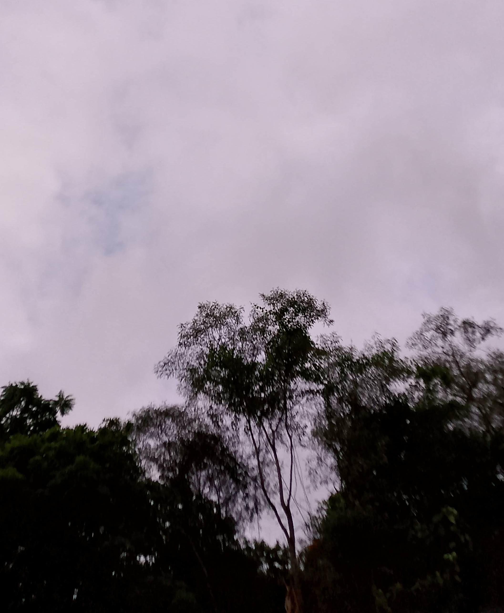

1 🧒 Introduction
Hi, I'm Luis and first of all, thank you for taking the time to visit my website and read my story. My name is Luis Gabriel R. Espinas, and I was born in Taguig City. I'm currently 19 years old, living a simple yet fulfilling life surrounded by a decent family and supportive friends.
The reason I chose to write this autobiography is not to define myself, but to share my journey because, to me, "giving definition means restricting the potential to change." Life constantly evolves, and I believe we grow through every decision, challenge, and experience. My goal is simply to share my path and the lessons I've learned along the way.
2 🏠 Early Life / Childhood


I was born into a humble and loving family. My father, Joel P. Espinas, works as a driver and bookkeeper. My mother, Venus Ruiz Espinas, is a homemaker who has always cared for us with patience and love. I have two siblings: Karl Angelo R. Espinas, my younger brother who is currently in senior high school, and Cherish Amber R. Espinas, my youngest sister who's currently in kindergarten.
Growing up, my childhood was full of adventure and sometimes, mischief. I often found myself in near-death situations simply because I loved exploring. I would climb trees, run through streets, and play outside until the sun went down. I used to get into little fights with my friends at school, but we always ended up laughing afterward. Those moments taught me a lot about forgiveness and the importance of companionship.
3 🎓 Education
I began my education at Bagong Nayon 2 Elementary School, continued to Antipolo National Science and Technology High School, and am now pursuing my college studies at ICCT Colleges.
Although I wasn't the most active in extracurricular activities, I always joined Intramurals to play sports and test my physical limits. I was also part of an Anti-Illegal Drug Club, where we raised awareness about the dangers of substance abuse.
Academically, I graduated with honors in junior high school and with high honors in senior high school. One teacher who deeply influenced me was Sir Angelo Dorosan, who helped me not only with my academic struggles but also with personal issues in life.
My favorite subjects have always been Mathematics and Science particularly calculus, trigonometry, geometry, biology, physics, and chemistry. I've always loved how these subjects explain the world logically and beautifully.
4 ❤️ Family and Friends
My family and friends play an irreplaceable role in my life. They serve as my foundation, my compass, and my guiding light toward my purpose. They remind me that I'm never truly alone, no matter how hard life gets.
One of the most important lessons they've taught me is to appreciate what I have now even the challenges because those struggles make us stronger when faced with discipline and willingness to learn.
Some of my best memories involve spending time with my family and friends in our Jehovah's Witness ministry. We visit different places together and speak to people about faith and hope. Those experiences have taught me the joy of giving and the peace that comes from serving others.
5 💭 Challenges and Life Lessons
Life hasn't always been easy. One of my greatest struggles has been balancing my secular education with my ministry and worship. Managing both at once has been overwhelming, but I learned perseverance through faith.
Another turning point was my first breakup it was painful, but it helped me understand my emotional limits and priorities. It taught me that I shouldn't give everything all at once and that love must also include self-respect. Above all, I learned to never give up on God, because His guidance remains steady even when my own emotions fail me.
6 🌟 Achievements and Successes
Some of my proudest accomplishments include graduating with honors in junior high school and with high honors in senior high school. These milestones remind me that hard work and consistency always pay off.
However, beyond academics, what I'm most proud of is my faith being part of my religion has given me the strength to make better choices and uphold integrity. Books have taught me knowledge, but the Bible has taught me the best principles and morals to live by.
7 🌱 Personal Growth and Beliefs


My values are rooted in the Bible, which guides me to live a disciplined and purposeful life. My main goal is simple: to have a decent job, build a loving family, and live a life that reflects kindness and humility.
Over time, I've grown stronger not only mentally but also physically. Going to the gym has helped me become more disciplined. I've also learned to focus on personal growth rather than distractions like games and entertainment.
The people who helped me mature the most are my parents, my close adult friends, and, surprisingly, my past heartbreak all of which shaped me into a more understanding and grounded person.
8 🚀 Present Life


Right now, my life is filled with learning and creativity. I study hard, but I also make time for my hobbies. I take pictures mostly. I also play guitar, go to the gym, cook (though I admit I'm not great at remembering recipes), and I also paint and draw whenever inspiration strikes. I love taking photos of beautiful sceneries they remind me how amazing life can be in its simplest moments.
What keeps me motivated is my faith in God and the love I see among people who care for each other. Seeing kindness in action inspires me to keep moving forward.
9 🎯 Future Plans and Dreams
My dream is to have a stable career, live a decent lifestyle, and raise a loving family of my own. I don't aspire to be the richest or most famous I just want to live a meaningful and honest life.
I plan to achieve these goals by walking the good and humble path, making decisions that align with my faith, and continuously improving myself. Ultimately, I want to become a pure, loving person who reflects the fruits of faithfulness in everything I do.
10 📝 Conclusion
Every busy day feels exciting, and every quiet day feels peaceful. I've learned to embrace both to enjoy the challenges and rest in the calm moments. Life, for me, is about learning, accepting, and loving. I believe love is the most enjoyable and rewarding thing we can ever share.
So far, life has taught me that everything happens for a reason or sometimes, even without one. Every choice I make leads to new outcomes, and though I don't always know what's right, the mystery of life keeps it thrilling. Even in my lowest points, God has never failed to lift me up.
If I could leave one message for anyone reading this, it would be from 1 Corinthians 10:13:
"No temptation has overtaken you except what is common to mankind. And God is faithful; he will not let you be tempted beyond what you can bear. But when you are tempted, he will also provide a way out so that you can endure it."
This verse reminds me that no matter how heavy life feels, there is always hope and God's guidance is always enough.